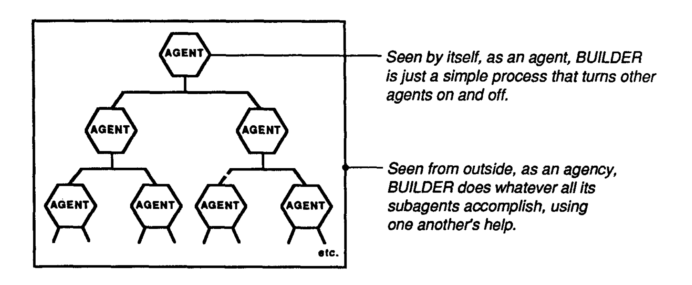

Introduction
The book brilliantly portrays the idea of mind being a society or collection of several smaller components called agents. And these small processes do not have any intelligence of their own, but they coordinate and work together to perform intelligent actions, forming the society of mind. This idea is very similar to how an actual human being is designed, consisting of several small cells, working in unison.
Agents and Agency
When a child first come across any game, it tries to learn it bit by bit. But in later years we tend to forget how we learnt all the concepts and consider it to be simple common sense. To dive deeper, the author proposes a model of mind which is a subsociety of agents. And this system is divided into two parts -agency and agents. If we observe the agent externally, we assume that it knows how to perform certain actions, but if we see the system from inside it is merely an arrangement of simple agents. And all these agents are interconnected with each other forming a network. Now to understand how this complex arrangement works, we need to focus on three main areas:
- How each separate part works?
- How each part interacts with other agents in the network.
- How these interactions combine and accomplish the task.

And even if we find answers to all these questions, there is this big puzzle of common sense. Thousand of tiny processes in our brain are involved while planning, predicting or making a decision and still, it appears so seamless that we regard it as common sense.
Strong Point
I found the model proposed by Minsky quite interesting, considering our brain is divided into two parts - A and B. We connect A to the outer world, but B is only connected to A. So, A can predict and control what happens in the outer world and B can supervise A actions. This way B can keep track of A actions and suppresses A’s agents when its actions go awry. I believe this model resembles the structure of our brain and how it makes a decision. So all the conscious and unconscious decisions we make, are controlled and supervised by some part of our brain which keeps our actions in check when required.
Weak Point
Though the author suggested several different ways our brain works and how this knowledge can be used while designing a humanoid robot, but the book does not deliver practical implemntation of these ideas. Like how can the architecture of smaller agents working together to make big decisions be implemented and what challenges we may face. Also, how can we design the supervisor part of the brain or the logical unit, so that it controls the actions of the agency. The author can include all such information to give a more clear picture of his vision.